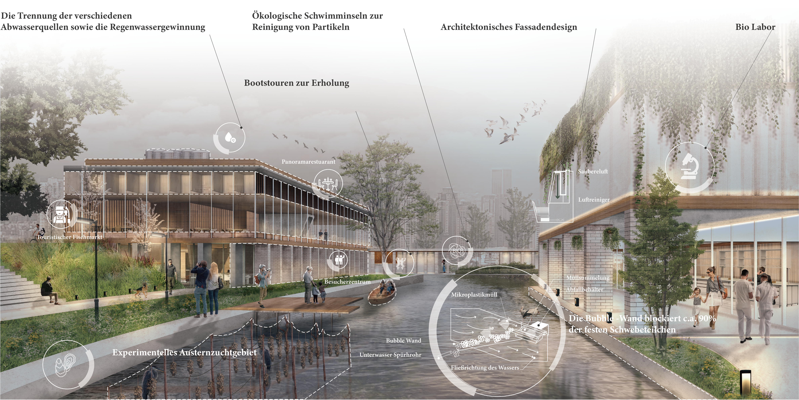
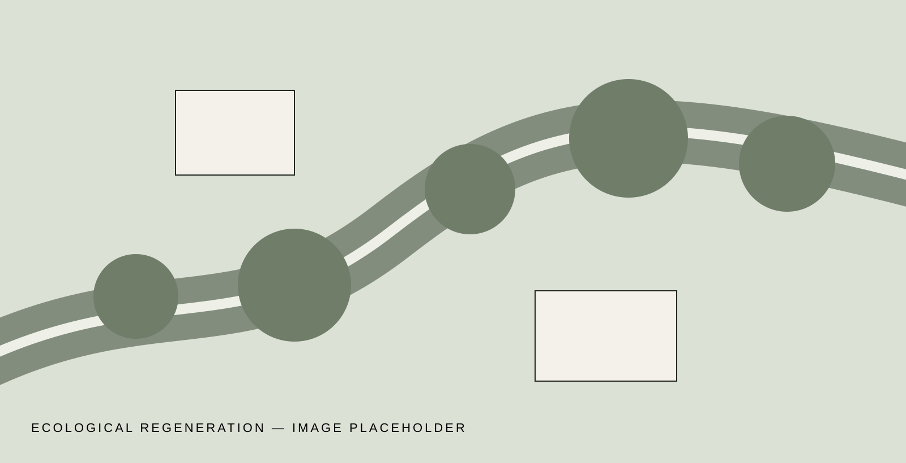

Ecological Regeneration
Landscape planning and ecological regeneration work developed through Robert Wu’s experience as a Project Assistant at Fu Jen Catholic University.
- Location
- Taiwan
- Year
- 2022
- Type
- Landscape Planning
- Focus
- Habitat restoration
- Role
- Design · Visualization

Taiwan’s coast contains some of the country’s most valuable wetland ecosystems. The Xiangshan Wetland in Hsinchu forms an important ecological corridor and a key stopover for migratory birds along the East Asian–Australasian Flyway.
Urban expansion and intensive land use have degraded water quality, accelerated shoreline retreat and reduced wetland habitats. The project proposes landscape-based regeneration through habitat restoration, watershed management and sustainable land-use strategies.
Restoration as a long-term framework.
The work approaches ecological regeneration as an adaptive process linking habitat, water, vegetation and human stewardship rather than as a single finished image.
Replace the placeholder diagrams with the final plans, sections, renderings and process material from the portfolio.
